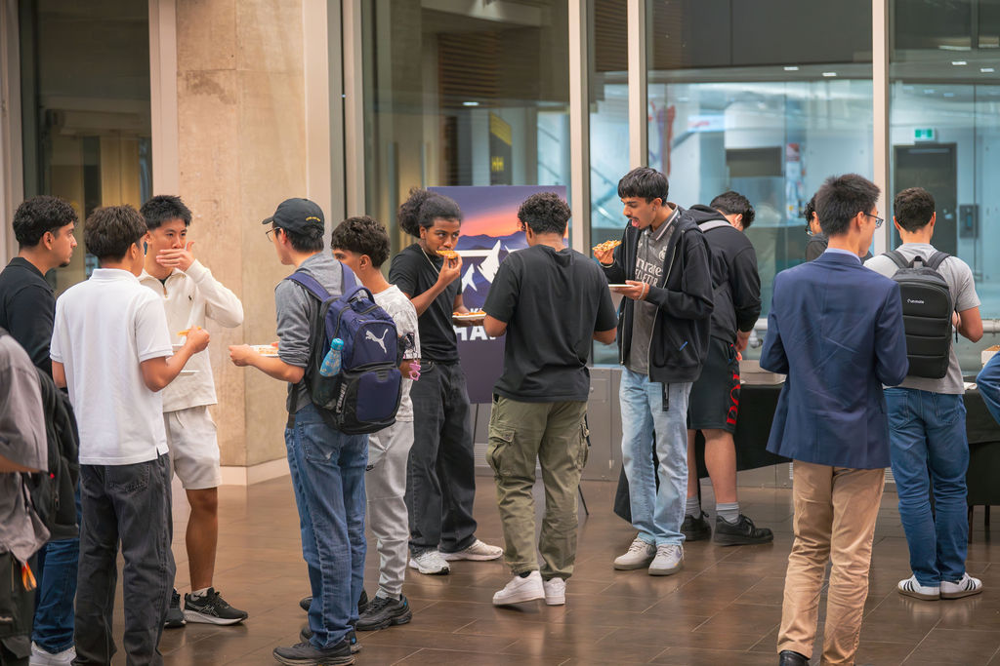

MTH visited the University of Waterloo's campus and brought students and professors together for an insightful evening where professors discussed how careers in investment banking, private equity, entrepreneurship, and accounting connect to classroom learning. Students learned about their ideal next career steps through an interactive panel, breakout rooms, and networking.
Event panelists
-
Professor Steve Balaban
Private Equity, Venture Capital & Wealth Mgmt.
-
Professor Garvin Blair
Mergers and Acquisitions & Strategic Finance
-
Professor Konrad Pawlak
Accounting and Finance Fundamentals
-
Professor Haaris Mian
Data Analytics and Business Strategy
Highlights of the night



What students walked away with
- Your professors often have an in-depth understanding of careers in their related fields. Ask them about career decisions.
- Professors rarely have their careers completely figured out. Neither should you.
- Be intentional with your next steps. Find what's interesting about your schoolwork, and learn about careers in those fields.
- Take time to think about what really interests you. Not what the "right" path is, but what you are excited about.